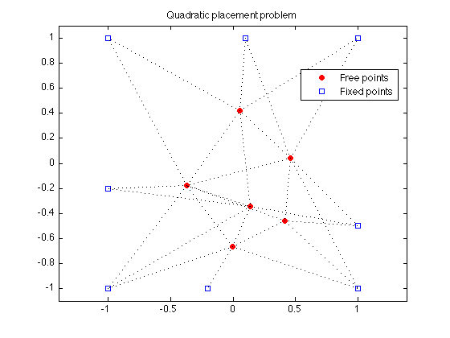
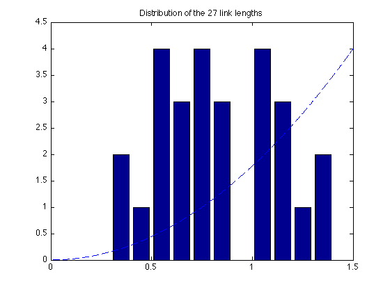

% Section 8.7.3, Boyd & Vandenberghe "Convex Optimization" % Original by Lieven Vandenberghe % Adapted for CVX by Joelle Skaf - 10/24/05 % (a figure is generated) % % Placement problem with 6 free points, 8 fixed points and 27 links. % The coordinates of the free points minimize the sum of the squares of % Euclidean lengths of the links, i.e. % minimize sum_{i<j) h(||x_i - x_j||) % where h(z) = z^2. linewidth = 1; % in points; width of dotted lines markersize = 5; % in points; marker size % Input data fixed = [ 1 1 -1 -1 1 -1 -0.2 0.1; % coordinates of fixed points 1 -1 -1 1 -0.5 -0.2 -1 1]'; M = size(fixed,1); % number of fixed points N = 6; % number of free points % first N columns of A correspond to free points, % last M columns correspond to fixed points A = [ 1 0 0 -1 0 0 0 0 0 0 0 0 0 0 1 0 -1 0 0 0 0 0 0 0 0 0 0 0 1 0 0 0 -1 0 0 0 0 0 0 0 0 0 1 0 0 0 0 0 -1 0 0 0 0 0 0 0 1 0 0 0 0 0 0 -1 0 0 0 0 0 0 1 0 0 0 0 0 0 0 0 0 -1 0 0 0 1 0 0 0 0 0 0 0 0 0 0 0 0 -1 0 1 -1 0 0 0 0 0 0 0 0 0 0 0 0 1 0 -1 0 0 0 0 0 0 0 0 0 0 0 1 0 0 0 -1 0 0 0 0 0 0 0 0 0 1 0 0 0 0 0 -1 0 0 0 0 0 0 0 1 0 0 0 0 0 0 -1 0 0 0 0 0 0 1 0 0 0 0 0 0 0 0 0 0 -1 0 0 0 1 -1 0 0 0 0 0 0 0 0 0 0 0 0 1 0 0 0 0 -1 0 0 0 0 0 0 0 0 1 0 0 0 0 0 0 0 -1 0 0 0 0 0 0 1 -1 0 0 0 0 0 0 0 0 0 0 0 0 1 0 0 0 0 -1 0 0 0 0 0 0 0 0 1 0 0 0 0 0 -1 0 0 0 0 0 0 0 1 0 0 0 0 0 0 0 -1 0 0 0 0 0 1 0 -1 0 0 0 0 0 -1 0 0 % error in data!!! 0 0 0 0 1 -1 0 0 0 0 0 0 0 0 0 0 0 0 1 0 -1 0 0 0 0 0 0 0 0 0 0 0 1 0 0 0 0 -1 0 0 0 0 0 0 0 0 1 0 0 0 0 0 0 0 0 -1 0 0 0 0 0 1 0 0 -1 0 0 0 0 0 0 0 0 0 0 1 0 0 0 0 -1 0 0 0 ]; nolinks = size(A,1); % number of links fprintf(1,'Computing the optimal locations of the 6 free points...'); cvx_begin variable x(N+M,2) minimize ( sum(square_pos(norms( A*x,2,2 )))) x(N+[1:M],:) == fixed; cvx_end fprintf(1,'Done! \n'); % Plots free_sum = x(1:N,:); figure(1); dots = plot(free_sum(:,1), free_sum(:,2), 'or', fixed(:,1), fixed(:,2), 'bs'); set(dots(1),'MarkerFaceColor','red'); hold on legend('Free points','Fixed points','Location','Best'); for i=1:nolinks ind = find(A(i,:)); line2 = plot(x(ind,1), x(ind,2), ':k'); hold on set(line2,'LineWidth',linewidth); end axis([-1.1 1.1 -1.1 1.1]) ; axis equal; title('Quadratic placement problem'); % print -deps placement-quadr.eps figure(2) all = [free_sum; fixed]; bins = 0.05:0.1:1.95; lengths = sqrt(sum((A*all).^2')'); [N2,hist2] = hist(lengths,bins); bar(hist2,N2); hold on; xx = linspace(0,2,1000); yy = (4/1.5^2)*xx.^2; plot(xx,yy,'--'); axis([0 1.5 0 4.5]); hold on plot([0 2], [0 0 ], 'k-'); title('Distribution of the 27 link lengths'); % print -deps placement-quadr-hist.eps
Computing the optimal locations of the 6 free points... Calling sedumi: 216 variables, 96 equality constraints ------------------------------------------------------------ SeDuMi 1.21 by AdvOL, 2005-2008 and Jos F. Sturm, 1998-2003. Alg = 2: xz-corrector, Adaptive Step-Differentiation, theta = 0.250, beta = 0.500 eqs m = 96, order n = 163, dim = 244, blocks = 55 nnz(A) = 239 + 0, nnz(ADA) = 944, nnz(L) = 556 it : b*y gap delta rate t/tP* t/tD* feas cg cg prec 0 : 9.55E+00 0.000 1 : 7.33E+00 2.65E+00 0.000 0.2775 0.9000 0.9000 2.61 1 1 2.0E+00 2 : 1.48E+01 7.16E-01 0.000 0.2702 0.9000 0.9000 0.81 1 1 6.4E-01 3 : 1.91E+01 1.67E-01 0.000 0.2333 0.9000 0.9000 0.82 1 1 1.6E-01 4 : 2.05E+01 8.19E-03 0.000 0.0490 0.9900 0.9900 0.95 1 1 8.4E-03 5 : 2.05E+01 3.25E-04 0.000 0.0397 0.9900 0.9900 1.00 1 1 3.3E-04 6 : 2.05E+01 1.10E-06 0.397 0.0034 0.9900 0.9903 1.00 1 1 9.1E-06 7 : 2.05E+01 1.21E-08 0.357 0.0110 0.9450 0.9375 1.00 1 1 9.2E-07 8 : 2.05E+01 2.12E-09 0.055 0.1747 0.9000 0.9088 1.00 1 1 1.6E-07 9 : 2.05E+01 4.44E-10 0.000 0.2099 0.9000 0.6875 1.00 2 2 3.4E-08 10 : 2.05E+01 8.21E-11 0.000 0.1848 0.9000 0.9000 1.00 2 2 6.3E-09 iter seconds digits c*x b*y 10 0.1 Inf 2.0547313493e+01 2.0547313495e+01 |Ax-b| = 4.7e-08, [Ay-c]_+ = 0.0E+00, |x|= 1.1e+01, |y|= 1.3e+01 Detailed timing (sec) Pre IPM Post 0.000E+00 8.000E-02 1.000E-02 Max-norms: ||b||=2, ||c|| = 1, Cholesky |add|=0, |skip| = 0, ||L.L|| = 2.03284. ------------------------------------------------------------ Status: Solved Optimal value (cvx_optval): +20.5473 Done!
 